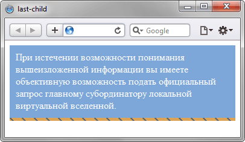

Псевдокласс :last-child
Псевдокласс :last-child задаёт стилевое оформление последнего элемента своего родителя.
Синтаксис
Селектор:last-child { ... }Пример
<!DOCTYPE html>
<html>
<head>
<meta charset="utf-8">
<title>last-child</title>
<style>
.block {
background: #7da7d9; /* Цвет фона */
color: #fff; /* Цвет текста */
}
.block :first-child {
padding: 10px; /* Поля вокруг текста */
}
.block :last-child {
background: #dda458 url(images/line.png) repeat-x; /* Параметры фона */
height: 5px; /* Высота блока */
}
</style>
</head>
<body>
<div class="block">
<div>
При истечении возможности понимания вышеизложенной информации вы
имеете объективную возможность подать официальный запрос главному
субординатору локальной виртуальной вселенной.
</div>
<div></div>
</div>
</body>
</html>Результат примера показан на рис. 1. В данном примере псевдокласс :last-child применяется для определения стиля последнего элемента <div>, расположенного внутри контейнера с именем класса block. Это позволило создать цветную полосу внизу блока без включения новых классов.

Рис. 1. Результат использования псевдокласса :last-child
Спецификация
| Спецификация | Статус |
|---|---|
| Selectors Level 4 | Рабочий проект |
| Selectors Level 3 | Рекомендация |
Браузеры
| Internet Explorer | Chrome | Opera | Safari | Firefox |
| 9 | 1 | 9.5 | 3.2 | 1 |
| Android | Firefox Mobile | Opera Mobile | Safari Mobile |
| 2.1 | 1 | 10 | 3.2 |